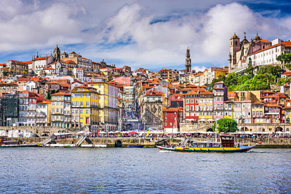
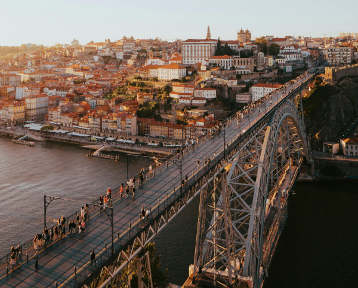

Histoire et Patrimoine
Porto, l'une des plus anciennes villes d'Europe, possède un riche patrimoine historique qui remonte à l'époque romaine. Son centre historique, la Ribeira, est un dédale de ruelles pavées, de maisons colorées et de monuments séculaires, témoins de son passé glorieux. La cathédrale de Porto, construite au XIIe siècle, est un exemple remarquable d'architecture romane, tandis que la tour des Clercs, symbole emblématique de la ville, offre une vue imprenable sur les toits de la vieille ville. Les visiteurs peuvent également explorer les vestiges de l'ancien mur de la ville et découvrir les églises baroques ornées qui parsèment le paysage urbain.
Culture et Arts
Porto est une ville dynamique et créative, avec une scène culturelle bouillonnante qui attire les artistes et les amateurs d'art du monde entier. Les musées de la ville abritent une collection diversifiée d'œuvres d'art, allant des peintures classiques aux installations contemporaines. Le musée d'art contemporain de Serralves est l'un des plus importants du Portugal, avec des expositions temporaires mettant en valeur des artistes nationaux et internationaux. Les théâtres de la ville, tels que le théâtre national São João et le théâtre municipal Rivoli, proposent une programmation variée de pièces de théâtre, de ballets et de spectacles de danse.
Attractions Touristiques
Porto est une destination touristique de premier plan, offrant une multitude d'attractions pour les visiteurs de tous âges. Les caves à vin de Porto de Vila Nova de Gaia sont parmi les plus populaires, offrant des visites guidées et des dégustations de vin dans des environnements historiques. Le quartier de la Ribeira, avec ses rues pavées pittoresques et ses maisons colorées, est idéal pour une promenade tranquille le long des rives du Douro. Le pont Dom Luís I, conçu par Gustave Eiffel, est une icône de la ville et offre une vue imprenable sur le fleuve et les collines environnantes. Les visiteurs peuvent également explorer les jardins botaniques de Porto, les parcs de la ville et les plages de sable doré le long de la côte atlantique.
Cuisine et Gastronomie
La cuisine de Porto est un véritable festin pour les sens, mettant en valeur des ingrédients frais et des recettes traditionnelles transmises de génération en génération. Les spécialités locales incluent la francesinha, un sandwich copieux garni de viande, de saucisse, de jambon, de fromage et de sauce tomate épicée, ainsi que le bacalhau à bras, un plat de morue salée mélangée à des pommes de terre, des œufs et des oignons. Les marchés alimentaires de Porto, tels que le marché de Bolhão, regorgent de produits frais, de fruits de mer, de charcuterie et de fromages artisanaux, offrant aux visiteurs une expérience culinaire inoubliable.
Loisirs et Divertissements
Porto offre une multitude d'options de loisirs et de divertissements pour tous les goûts et tous les budgets. Les amateurs de plein air peuvent profiter des parcs et jardins de la ville, notamment le parc de la ville, le jardin botanique et le parc de Serralves, qui offrent des espaces verts paisibles pour se détendre et se ressourcer. La vie nocturne de Porto est animée, avec une multitude de bars, de clubs et de restaurants proposant une variété de musique live, de DJ sets et de soirées à thème. Les cinéphiles peuvent également profiter d'une programmation diversifiée de films internationaux au cinéma Passos Manuel, un cinéma d'art et essai réputé de la ville.